上一章節，我介紹了unit類型Unit或()，以及zero類型Void,同時也介紹了运算符Add和Mul,還有函數類型a -> b.
在这篇文章中，我将同时使用Haskell表示法和数学表示法。下表将帮助您在两者之间来回转换.
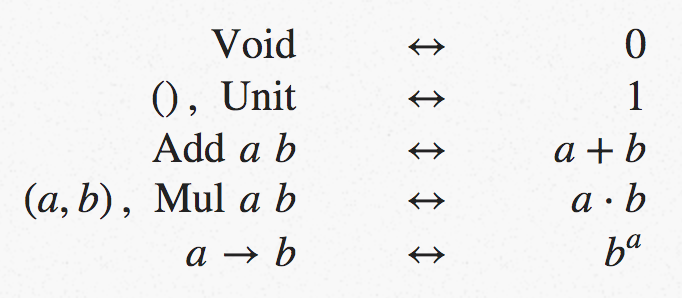
在这篇文章中，我将讨论recursive(递归)类型，并展示如何利用类型代数来推断它们的有趣之处.
Maybe
让我们来探索Maybe a。此类型指示它可能包含类型a的值，但也可能为空。它是这样定义的:1
data Maybe a = Nothing | Just a
竖线表示这是一个sum类型，因此，如果我们首先定义Nothing和Just a类型，则可以使用之前定义的Add类型来编写它。它看起来像这样:1
2
3
4data Nothing = Nothing
data Just a = Just a
type Maybe a = Add Nothing (Just a)
看看我们如何将data声明替换为type声明？这意味着Just a不再是一种新类型, 只是我们已经知道的一种类型的同义词。
但是我们可以更进一步。请注意，Nothing仅具有一个值，因此等效于().
同样，Just是一个具有类型a的单个值的容器，因此等效于a。因此，我们有:1
type Maybe a = Add () a
但这就相当于说, Maybe a与1 + a相同。Maybe所做的只是为类型增加一个可能的值.
Recursive Types
Lists
Haskell中的基本列表是一个链表。as的列表要么是空的，表示为[]，要么是单个a的cons到另一个as的列表中，表示为a:as。如果我们想定义自己的列表，我们可以写类似:1
data List a = Nil | Cons a (List a)
让我们花点时间看一下此声明的结构。就像Maybe一样，List类型是两个简单类型的sum.
第一个summand(被加数)是Nil，这是一个等效于()的nullary(空的)构造函数.
第二个summand是Cons a (List a)，它是由a和as列表组成的product.
如果我们将列表写为L(a)，则代数形式为:1
L(a) = 1 + a ⋅ L(a)
似乎我们应该能够在Haskell中将列表类型编写为:1
type List a = Add () (a, (List a))
但事实上，这不会编译。
原因是类型同义词在编译时、类型检查之后、编译之前expanded(展开)。这个定义永远不会完成expanding(展开)，它只会继续增长:1
Add () (a, Add () (a, Add () (a, ...)))
等等。这样做无效的原因与Haskell处理递归类型定义的方式有关(就像大多数具有复杂类型系统的语言一样，它使用isorecursive类型而不是equirecursive类型)。
解决方法是使用newtype声明而不是type声明，并将类型包装在新的构造函数L中:1
newtype List a = L (Add () (a, List a))
这只是为了在编译代码时满足类型检查器的要求，额外的构造函数将被优化掉，剩下的将与上面的type声明相同。
如果我将List a类型写为L(a)，那么这个列表声明说明:1
L(a) = 1 + a ⋅ L(a)
要查看真正的列表，我们可以通过重复substitution(替换)开始expanding(扩展/展开)定义。在expansion(展开)中，每当看到a · a的形式时，我都会将其替换为a²以节省空间。
练习：表达式a²可以表示為一对(a，a)或函数2 → a。显示这些都是一样的.
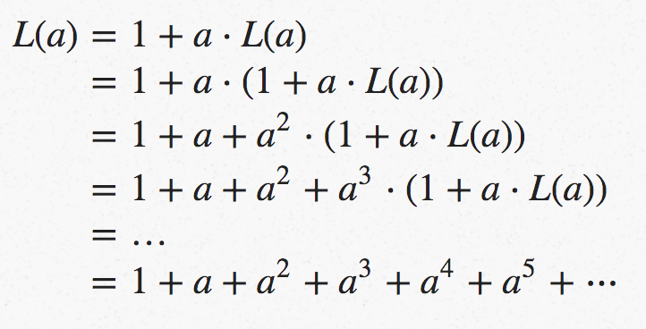
这告诉我们A的列表要么是空的列表，要么是包含单个A的列表，要么是包含两个A的列表，或者是三个A的列表，等等。也许你已经知道了——但是代数告诉我们这很好！
但现在，这里有一些非常酷的东西, 让我们从列表的等式开始，而不是一再替换，我们会暂时忘记对象是类型，并假装它们是任意的数学表达式。这意味着我们有理由使用任何我们喜欢的方法来解出L(a).
首先，从两边减去a * L(a):1
L(a) − a⋅L(a) = 1
现在将左侧的L(a)提出来(factor out):1
(1−a) ⋅ L(a) = 1
最后，将两边都除以1-a:
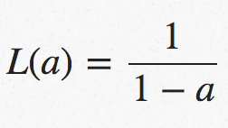
这看起来很荒谬，因为我们不知道从另一种类型减去一种类型的含义，而且我们当然也不知道将一种类型divide(除以)另一种类型的含义。 但这是否告诉我们一些有趣的事情？
如果你学习微积分，你可能记得许多函数都有Taylor Series(泰勒级数)expansion(展开式)。
我们可以问Wolfram Alpha, 1/(1-a)的泰勒级数是什么，它告诉我们:
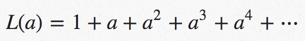
也就是说，L(a)的级数展开正是我们从重复substitutions(替换)中推导出来的.
尽管我们严重地滥用了代数，通过对类型执行完全不合理的操作，我们最终还是得到了一个合理的答案.
Trees
考虑在节点处具有值的二叉树的类型。在Haskell中，您可以将其写为:1
data Tree a = Empty | Node a (Tree a) (Tree a)
在某种程度上，我们可能已经很熟悉了，我们可以把它看作是两种类型的sum, 一种等价于()的空类型，一种product类型。
这一次它是由三个terms组成的product,但这不是问题——我们只是使用一个嵌套的product,形式是(a,(b,c))。
用我们已经知道的运算符定义(同样，使用newtype允许我们有递归定义)是:1
newtype Tree a = T (Add () (a, (Tree a, Tree a)))
用代数语言，对于树的类型为T(a)，我们将写為:
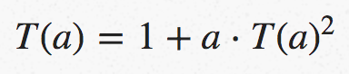
为了更好地理解树是什么，我们可以像处理列表那样应用重复替换，但这会更混乱相反，我们能用重新排列方程的技巧来求解T(a)吗？
首先，重新排列以获得等式一侧的所有内容:
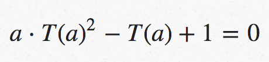
我们现在可以把它看作t(a)的二次方程，我们可以用二次方程来求解，得到:
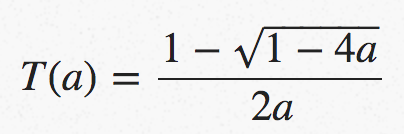
这比列表方程式更没有意义。 取一个类型的平方根到底意味着什么？但是，保持冷静，我们再次要求Wolfram Alpha进行级数展开，它告诉我们:
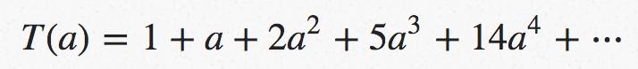
我们如何理解这一点？前两个术语告诉我们，一棵树可以是空的(如果是Empty)，也可以有一个类型为a的值(如果它是Node a Empty Empty)。
下一个术语告诉我们一棵树可以用2种不同的方式包含2个A类型的值，而下一个术语告诉我们可以用5种不同的方式包含3个A类型的值。
但是，如果我们枚举所有的二叉树，并按照它们包含的值的数量对它们进行分组，这正是我们注意到的。一棵树没有值，一棵树只有一个值。然后，有两棵树具有两个值，五棵树具有三个值–如图(从Flajolet和Sedgewick的出色著作Analytic Combinatorics中借用):
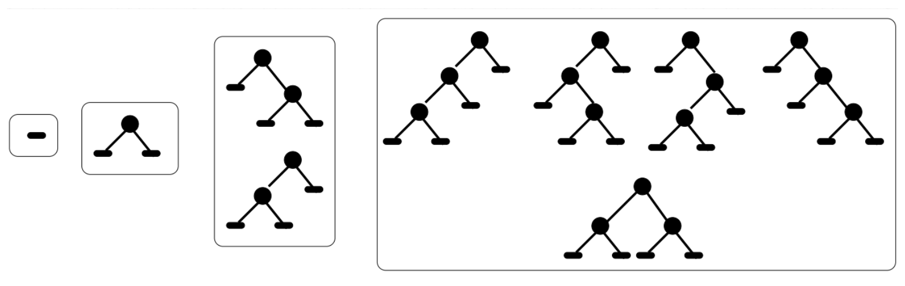
该方程计算可以存在的不同二叉树的数目。这个计数属性与我们在第一篇文章中看到的简单值计数示例有关，也与组合物种有关，如Brent Yorgey所广泛描述的。物种和类型有很多共同点，尽管它们不是一回事。
Seven Trees In One (七棵树合而为一)
如果我们限制到只包含unit(单位)类型的树，即Tree ()，则出现在T(a)中的a等于1，我们可以将树的定义方程写为:
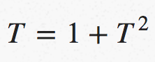
通过玩代数，反复使用t2 = t - 1这个事实，我们可以推断出:
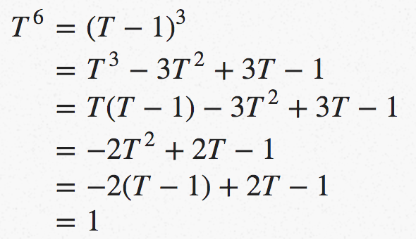
当用类型语言解释时，它表示六元组树相当于单位类型。
换句话说，只有一棵六元组的树。
这显然是胡说八道，出什么事了？更神秘的是，如果我们把方程的两边乘以t，我们就得到:
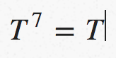
这不是胡说八道-它说七元树等于一個single棵树。
乍一看，这不是一个深刻的结果。 具有countably infinite(无限数量)的可能值的任何两种类型都是等效的-这就是countable(可数)的含义。
然而，这比这更微妙。在七棵树合一的论文中，Andreas Blass不仅展示了如何找到一个从七棵树到一棵树再回到另一棵树的显式映射（本质上他告诉你如何编写上一篇文章中的from和to函数），而且还展示了函数在任何一棵树中都不需要看超过四层的深度。
最后，他解释了为什么推断$T^7$ = T|是有效的，而$T^6$ = 1不是事实证明，你可以把我在上面给出的使用减法的推导转化为一个不使用减法的诚实证明，因此对类型有效, 但只有当你开始使用的t的幂大于6的倍数时。
因此，可以将t7進一步reduce(化簡為)为t(因为7=6+1),但不能将t6(化簡為)为1.
An Explanation? (一个解释?)
如果你认为这篇文章提出的问题比它提供的答案还多，这是公平的。例如:
- 减去、除以或取类型的平方根是什么意思？
- 对于一个仍然有意义的
computational interpretation(计算解释)的类型方程，你还能做些什么呢？ - 为什么对类型方程的不合理操作会产生合理的答案呢？
作为最后一个问题的总结，对类型进行建模的数学结构是semirings(半环)。
这只是一种说法，可以加和乘objects(对象)，你有对应于0和1的对象。MarceloFiore和Tom Leinster发表的一篇论文表明，如果你能从equation(方程)定义的复数t开始:1
t = p(t)
对于某些多项式p，并推导:
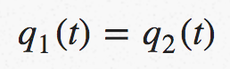
如果q1和q2不是常数(它们不能只是1)，那么同样的结果也适用于semirings(半环)尤其是对于类型，这是正确的，并且您可以找到不使用subtraction(减法)的证明，或者找到对类型非法的任何其他运算符。
下次，我将解释什么是zippers(拉链)，并描述如何对类型进行微积分。